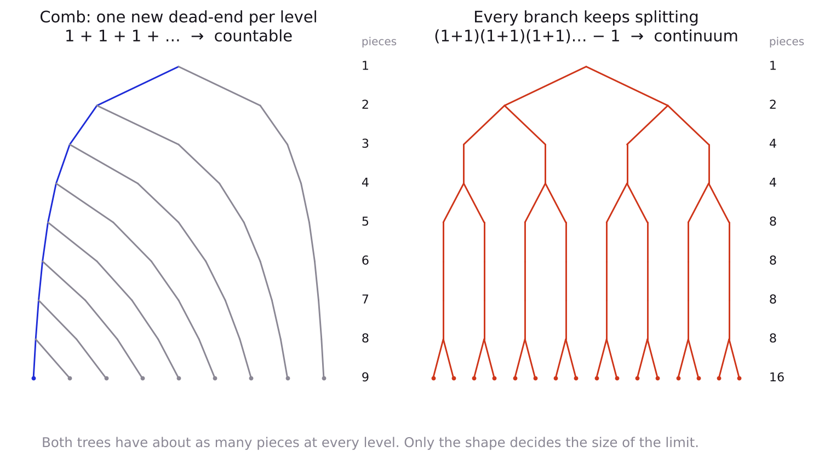
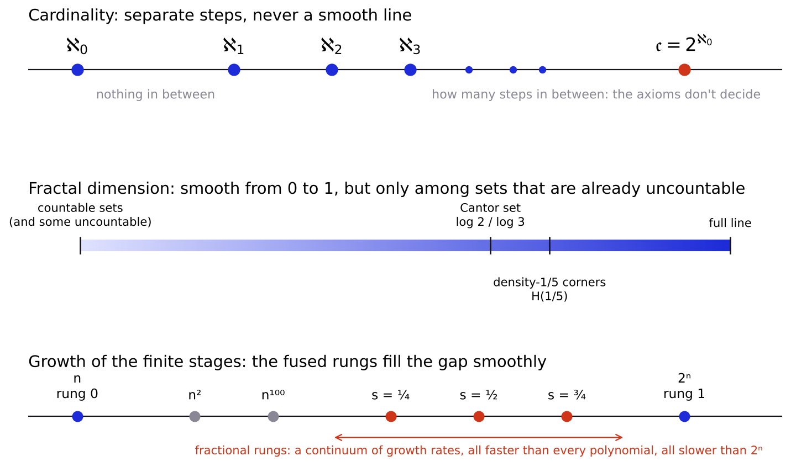
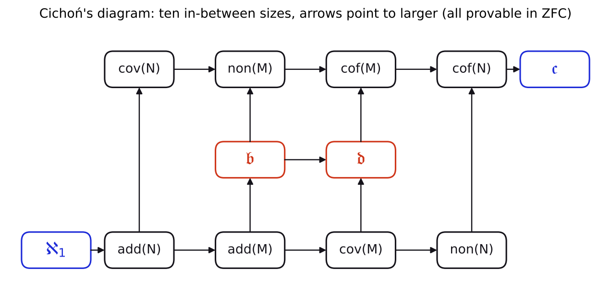
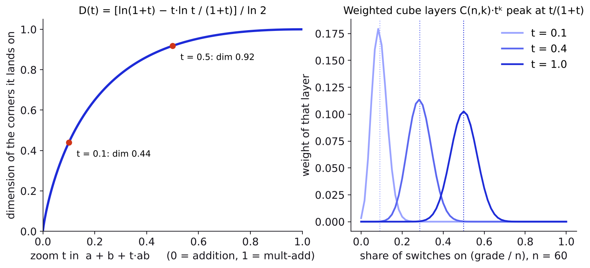
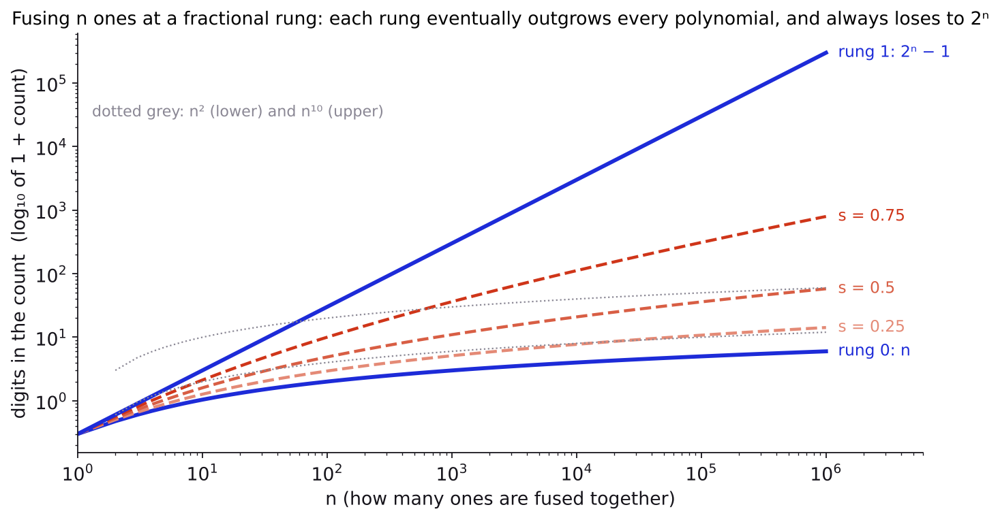

Sizes of infinity come in separate steps, never a smooth line, as long as the axiom of choice holds. Your continuum is real, but it lives one level finer: in fractal size and in how fast the finite stages grow, and the fused rungs walk it smoothly.

Each scale answers a different question, and only cardinality is forced to be a ladder. The other two are smooth.

Top: how many elements. Middle: how much room a set takes up. Bottom: how fast the pieces multiply as you zoom in.
Combine n ones by the circle operation and you get every corner of the n-cube except the origin. The corners sort into layers by how many switches are on: 1, 3, 3, 1 for the cube, Pascal's rows in general.
Now let n be the countable infinity. Adding ones gives ℵ₀. Combining ones by the circle operation gives every corner of the infinite-dimensional cube, which is the Cantor set, which has the size of the real line.
Where does the jump come from? Every corner with finitely many switches on is countable, layer by layer. The grade-1 layer is exactly the addition part, n singletons. Only the corners with infinitely many switches on push past countable. So the continuum is made entirely of corner terms of infinite grade, the ab part of a + b + ab carried on forever.
The same split is a classical theorem about shapes. Any closed set of reals is a countable "dead-end" part plus a part where every branch keeps splitting (Cantor–Bendixson). That second part, if it is there at all, contains a copy of the whole infinite cube. This is why no closed, Borel or analytic set has a size strictly in between: it is either countable or it holds a full circle-operation copy of the continuum.
On infinite cardinals, a + b = a·b = max(a, b), so the circle operation collapses to max too. The first rung that can climb is the fused exponent:
So in cardinal arithmetic, everything at or below the circle operation is flat, and one step of the exponent rung jumps straight from ℵ₀ to 𝔠. Nothing in cardinal arithmetic lands in between. That matches the fractional-rungs work: there, lower rungs zoomed out turn into max. Infinite cardinal arithmetic is the fully zoomed-out (tropical) view of the ladder.
n ones added make n; n ones combined by the circle operation make 2ⁿ − 1; the layers 1, 3, 3, 1, weighted by t, fill (1+t)ⁿ; and Cantor's diagonal: no list of 0/1 sequences indexed by its own positions holds them all, so the infinite cube has more corners than axes.
Every infinite size is some ℵ, and the ℵs are well-ordered: each one has a next one, with nothing between them. Gödel (1938) showed the axioms are consistent with no size between ℵ₀ and 𝔠. Cohen (1963) showed they are consistent with as many as you like. Later work pins it down: 𝔠 can be any ℵ that isn't a countable limit of smaller ones (König's theorem rules out ℵω).
But however many there are, they are always separate steps. A dense line of cardinals is impossible with choice.
Questions about measure and category each define a size between ℵ₁ and 𝔠: how many null sets you need to cover the line, how many thin sets add up to something fat, and so on. 𝔟 and 𝔡 count growth rates: how many functions you need so that no single function outgrows them all, or so that they outgrow every function. ZFC proves the arrows plus two equations, add(M) = min(𝔟, cov(M)) and cof(M) = max(𝔡, non(M)); every way of putting each one at ℵ₁ or ℵ₂ that respects those is consistent.

add, cov, non, cof of the null sets (N) and the meagre sets (M), plus 𝔟 and 𝔡 for growth rates.
Drop the axiom of choice and sizes stop forming a ladder. Jech and Sochor showed that any ordering you like can be built into the sizes of some model of ZF, including a densely ordered one like the rationals, so a smooth-looking line of infinities becomes consistent.
It can even be consistent to have an infinite set of reals with no countable part at all (Dedekind-finite). It is not countable, it is smaller than the line, and it isn't bigger than ℵ₀ either: an infinity sitting sideways to the countable one.
Weight each switch by t and the cube's layers become C(n,k)·tᵏ, which add up to (1+t)ⁿ. That is the n-fold of the zoomed circle operation a + b + t·ab, and it is the ordinary circle operation seen at scale t: t·(a ∘t b) = ta ∘₁ tb. At t = 0 it is addition; at t = 1 it is the circle operation.
The heaviest layer sits at the share p = t/(1+t) of switches on. The infinite corners with exactly that share form a set whose fractal dimension is the binary entropy (Besicovitch 1934, Eggleston 1949). Put the two together and the zoom maps straight onto dimension:
D(0) = 0, D(0.1) ≈ 0.44, D(0.5) ≈ 0.92, D(1) = 1. A smooth bridge from the addition rung to the circle-operation rung, and every set on it is built from the layers of the circle-operation cube. The first term, ln(1+t), is the log of one circle-operation step with dial k; the second subtracts the cost of the weight.
The catch: every set on this bridge already has the size of the continuum. Dimension 0 holds countable sets and also some uncountable ones (sparse corner sets). Dimension measures room taken up, not number of points.

Left: zoom t against dimension. Right: the weighted layers of a 60-cube peak at t/(1+t).
Dimension can't tell apart the uncountable sets of dimension 0. Gauge functions can: replace rᵈ by any slowly shrinking h(r). Every uncountable compact set has positive size for some gauge (from Rogers), while every countable set has size zero in every gauge. The gauges form a rich ordering with no bottom step: the closest thing to a true continuum of sizes that runs right down to the countable boundary.
The parallel fractional-rungs work gives a smooth ladder Bs: s = 0 is addition, s = 1 is the circle operation. Fuse n ones at rung s and count:
Rung 0 gives n. Rung 1 gives 2ⁿ − 1. Every rung in between eventually outgrows every polynomial and always stays below every exponential, and each rung outgrows the one below. That is a continuous one-parameter family of growth rates, filling exactly the gap between "countable sum" and "continuum corners".
Why polynomial is impossible, in one line: the half rung squared is the whole rung. If the half rung stayed under nᵏ, the whole rung would stay under nk·k, but the whole rung is exponential. This squeeze is written out in core Lean (not yet compiled); the same argument works for any fraction.
Build a Cantor set that splits every branch just often enough to keep Ns(n) pieces at scale 2⁻ⁿ. Each rung gives a set Cs that is uncountable, has dimension 0, and has positive size in its own gauge and zero size in the gauge of any higher rung. So the fractional rungs give a strictly ordered, smooth chain of geometric sizes, all between "countable" and "positive dimension".

Digits in the count against n, up to a million. Polynomials are straight lines here; the fractional rungs bend upward past every one of them, and stay under 2ⁿ.
In number of points: no, every one of these sets has exactly the size of the continuum, and with choice the sizes between ℵ₀ and 𝔠 are always separate steps. In growth and in geometric size: yes, and the fused rungs and the zoomed circle operation each give a smooth dial across it. 𝔟 and 𝔡 in Cichoń's diagram are precisely the cardinals that measure this growth continuum, which is how the smooth world and the stepped world meet.
| Claim | Verdict |
|---|---|
| The axioms allow many in-between sizes, even infinitely many, but always as separate steps. | Right with the axiom of choice. Without choice it can fail: sizes can sit sideways to each other, and a densely ordered family of sizes is consistent (Jech–Sochor). |
| Fractal dimension gives a smooth scale between countable and uncountable sets. | Not quite. Dimension is smooth, but any set of positive dimension is already uncountable, and dimension 0 contains both countable and uncountable sets. It is a scale inside the continuum. Gauge functions get closer to the countable boundary. |
No lead here is on the level of the solitons. Every mathematical fact on this page is classical. What is new is the single picture that ties them together through the circle operation.
| Piece | Status | Source |
|---|---|---|
| Continuum hypothesis independent; 𝔠 can be any ℵ of uncountable cofinality | Known | Gödel 1938, Cohen 1963, Solovay, Easton 1970, König |
| No in-between sizes for closed, Borel or analytic sets | Known | Cantor–Bendixson, Alexandrov–Hausdorff, Suslin |
| Cichoń's diagram and its consistency results | Known | Cichoń; Bartoszyński–Judah |
| Without choice: any order embeds into the sizes; Dedekind-finite sets of reals | Known | Jech 1966, Jech–Sochor; Karagila 2014 |
| Frequency-p sets have dimension H(p) | Known | Besicovitch 1934, Eggleston 1949 |
| Every uncountable compact set has positive size in some gauge | Known | Rogers, Hausdorff Measures |
| Half-exponential growth sits between all polynomials and all exponentials | Known | Regular iteration (Szekeres 1958); standard bounds |
| ℵ₀ is the fold of + on ones, 𝔠 the fold of ∘₁ on ones; the continuum is the corner terms of infinite grade | Restatement in fused language | This page |
| Zoom t of circle-operation maps to dimension D(t) in closed form | Repackaging of Eggleston plus the binomial layers; worth keeping as a picture | This page |
| Fractional rungs give a smooth chain of gauge sizes and growth rates between n and 2ⁿ | New framing of known constructions; the cleanest link from a rung parameter to a smooth size | This page, with the fractional-rungs work |
Lean, core only, no sorry, uncompiled. This workspace has no Lean toolchain, so the file hasn't been run through Lean yet. Every identity in it is also checked in Python.
sumOnes_eq, circOnes_succ: n ones added make n; combined by the circle operation make 2ⁿ − 1.layers_eval: the circle-operation cube's layers, weighted by t, fill (1+t)ⁿ; layers 3 = [1,3,3,1].wOnes_spec, wOnes_zero: the zoomed circle operation folded n times gives t·Wₙ + 1 = (1+t)ⁿ, and plain n at t = 0.cantor, single_inj: the infinite cube has strictly more corners than axes.half_iter_upper, half_iter_lower, half_not_poly: the half-rung squeeze.Python: 22 of 22 checks pass, including the brute-force corner layers, the dimension formula, the rung counts up to n = 10⁶ and the comb-versus-splitting trees.
Not proved: the limit statements (eventually beats every polynomial, gauge sizes go to zero) are argued in prose and checked numerically, not formalised. The ZFC and ZF results are cited, not reproved.
In math-theory/infinities/: checks.py and checks_output.txt, figures.py, lean/Infinities.lean, this page.
Karagila, Embedding orders into the cardinals with DCκ (reviews Jech and Jech–Sochor). Peres and Solomyak, Dimension spectrum for a nonconventional ergodic average (states Besicovitch–Eggleston). On a topological Erdős similarity problem (the Rogers gauge result). Hausdorff measure.